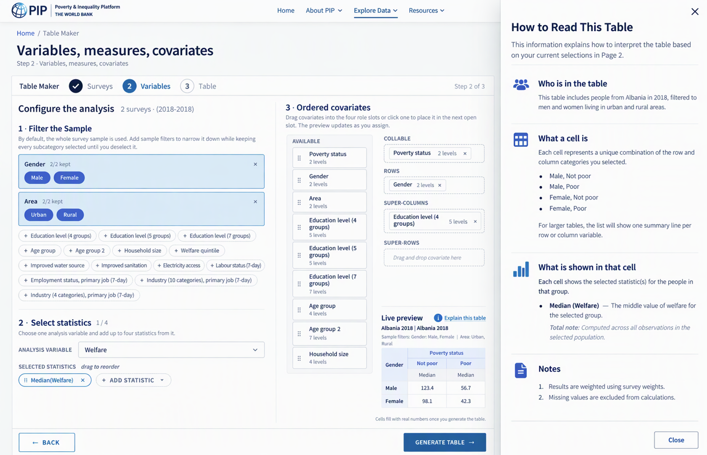
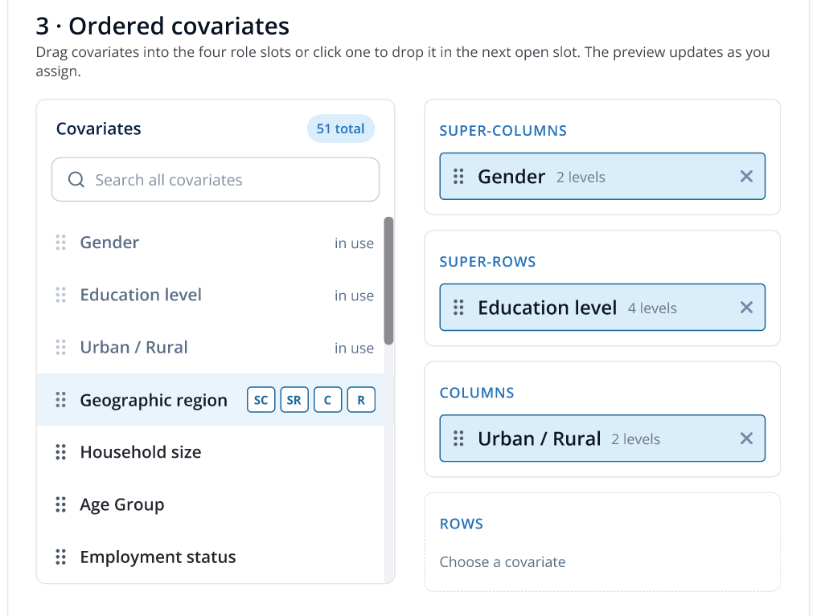

Table Maker
Fast and reproducible tables from PIP harmonized survey data
2026-11-17
Table Maker UI
Live UAT Environment · Interactive Walkthrough
https://pipuat.worldbank.org/table-maker
Open Table Maker UI ↗
Step 1 · Select Surveys
Which surveys do I want to analyze?
Step 2 · Measure & Slice
How do I want to measure & cut the data?
Step 3 · Results & Export
Here are my results
Step 2 — Variables, Measures & How to Read This Table

Step 2 — Ordered Covariates

Live API Call: /table & /metadata
GET http://127.0.0.1:8080/table?analysis_var=welfare&pip_id=COL_2019_GEIH_INC_ALL&measures=mean&measures=median&measures=gini&poverty_line=6.85&column=pov_status&row=gender&ppp=2021&pop_share_threshold=0.001 Engine warm: 670 ms (1 survey) · 2060 ms (10 surveys) View:
Live Metadata Output: /metadata
Backup: Live Registry Catalogue